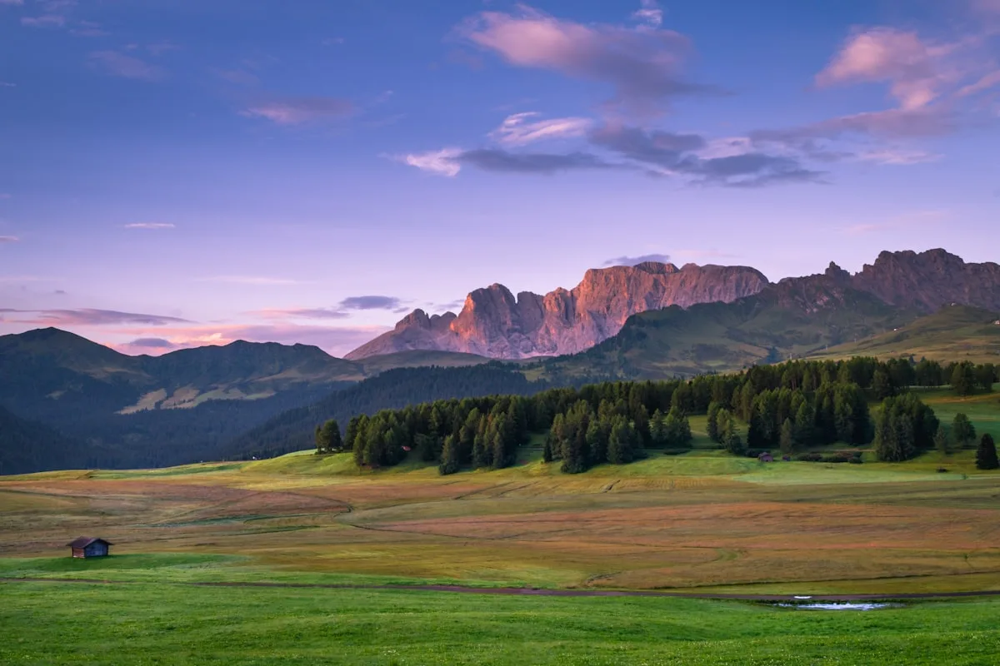
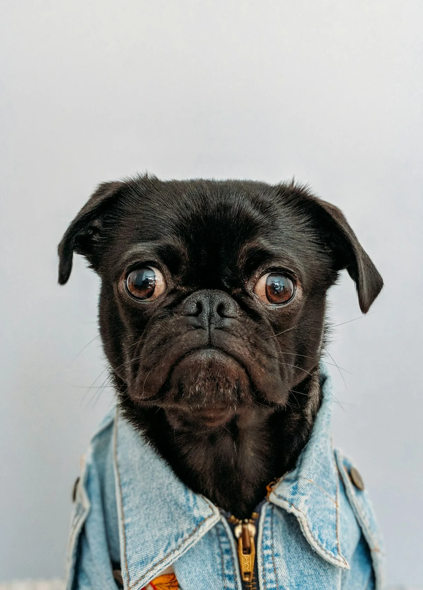
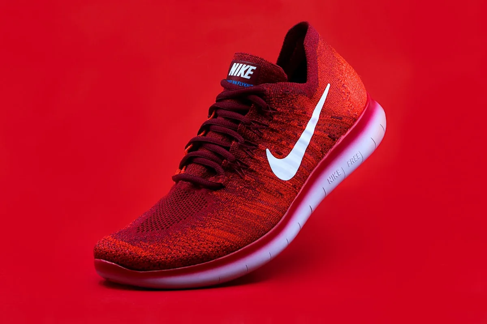
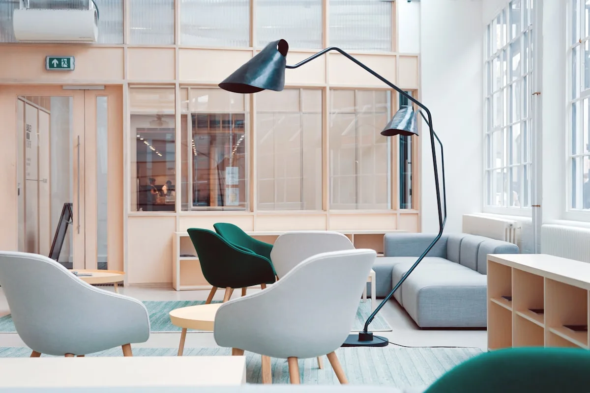
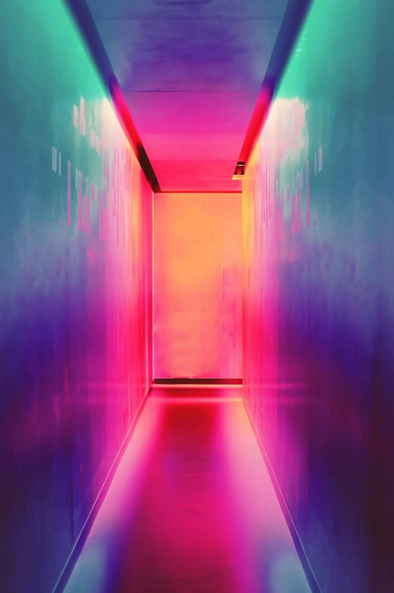

The Studio
Svalbard in Winter



Woven from the ends of the earth — polar luxury textiles born from arctic tundra traditions and masterful craft
SVALBORD was founded in 1932 by the Erikstad family on the Svalbard archipelago — the group of Norwegian islands that sits at the very top of the world, 1,300 kilometres from the North Pole. The extreme climate, where reindeer wool grows twice as thick as anywhere else on earth, produces fibre of extraordinary fineness and thermal performance.
For nine decades, our twelve master weavers have maintained traditional warp-weighted loom techniques, supplemented by hand-spun yarn from the island's own semi-wild reindeer herds. Each piece requires between 40 and 280 hours to complete.
Our HeritageEvery thread in a SVALBORD piece begins as raw fibre — hand-selected from individual animals, hand-spun on drop spindles, dyed with arctic plant pigments. Nothing is purchased as yarn. This adds 60–80 hours per piece, but produces a textile no commercial mill can replicate.
Our weavers work with pattern complexity that has no commercial equivalent — some twill sequences requiring 400+ pattern threads that can only be held in the muscle memory of a weaver who has worked the same structure for thirty years.
A SVALBORD piece must be beautiful, but it must also function in arctic conditions. Our blankets and throws are tested for thermal retention in sub-zero temperatures. We refuse to sacrifice utility for aesthetics, or aesthetics for utility.

Our flagship piece. A 200×250cm blanket woven in 4-shaft twill from hand-spun reindeer underhair — the finest natural fibre in the arctic. Each throw takes 280 hours to complete.

A narrative textile documenting the seasonal migration of Svalbard reindeer herds in geometric tapestry weave. Each piece records a different year's route, making every runner unique.

A sculptural wall hanging inspired by the movement patterns of Arctic sea ice — woven in natural undyed grey, cream, and charcoal reindeer wool to create the illusion of slow drift.
A SVALBORD master weaver spends seven years in apprenticeship before their first solo commission. The loom techniques we use — warp-weighted, tablet-woven, and soumak brocade — are derived directly from Viking-era textile traditions documented in Norwegian archaeological record.
We never weave in silence. Every piece is created to spoken narrative — the stories of the tundra, the herds, the ice, and the people who have lived in this landscape for four thousand years.
Each spring, our fibre specialist walks with the herds across the Svalbard tundra — selecting and hand-combing underhair at peak growth, when fibre diameter reaches its minimum.
Raw fibres are cleaned, carded, and hand-spun to precise thread counts on traditional drop spindles. A single Grand Throw requires 6kg of raw fibre, spun over three weeks.
Colours are derived from arctic flora — lichen grey, crowberry blue, cloudberry amber, and natural undyed tones. No synthetic dyes are used. Each seasonal harvest produces slightly different hues.
The weave itself — from warp dressing to final pressing — takes 40–280 hours depending on the piece. A hand-stitched SVALBORD label is sewn into each completed work, carrying the weaver's initials and year.


SVALBORD accepts a maximum of 40 commissions per year. Each piece is unique, signed, and delivered with a full provenance document.
Begin Commission